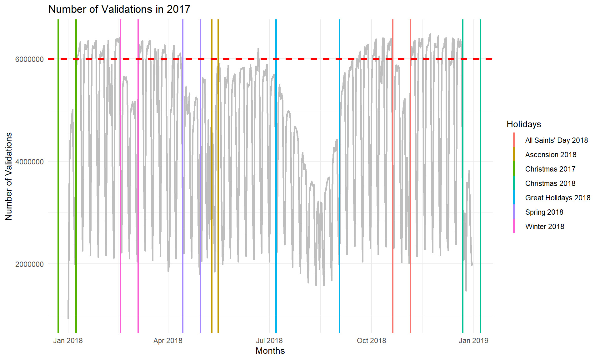
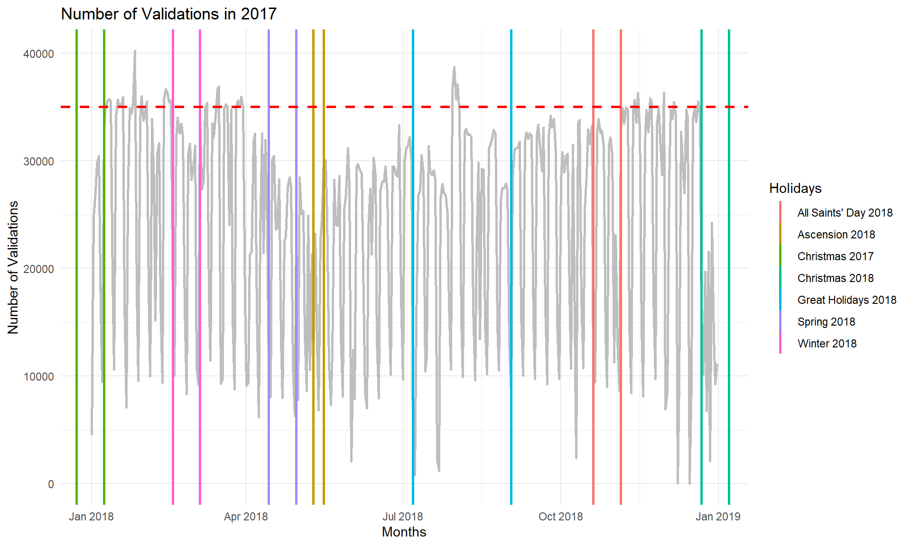
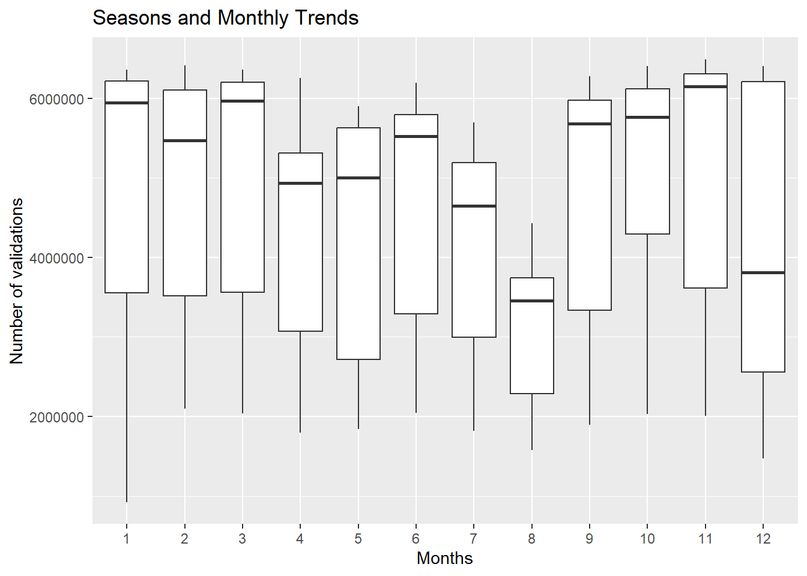
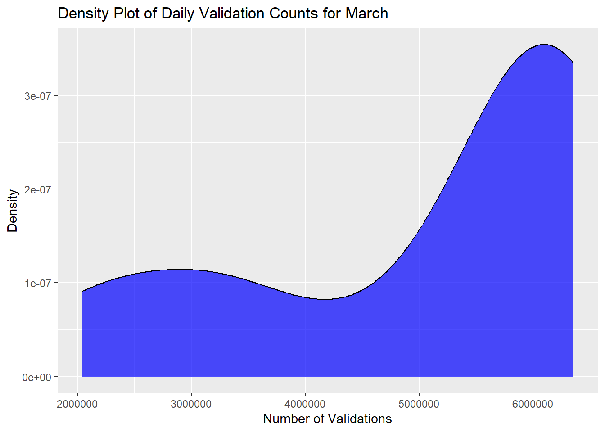
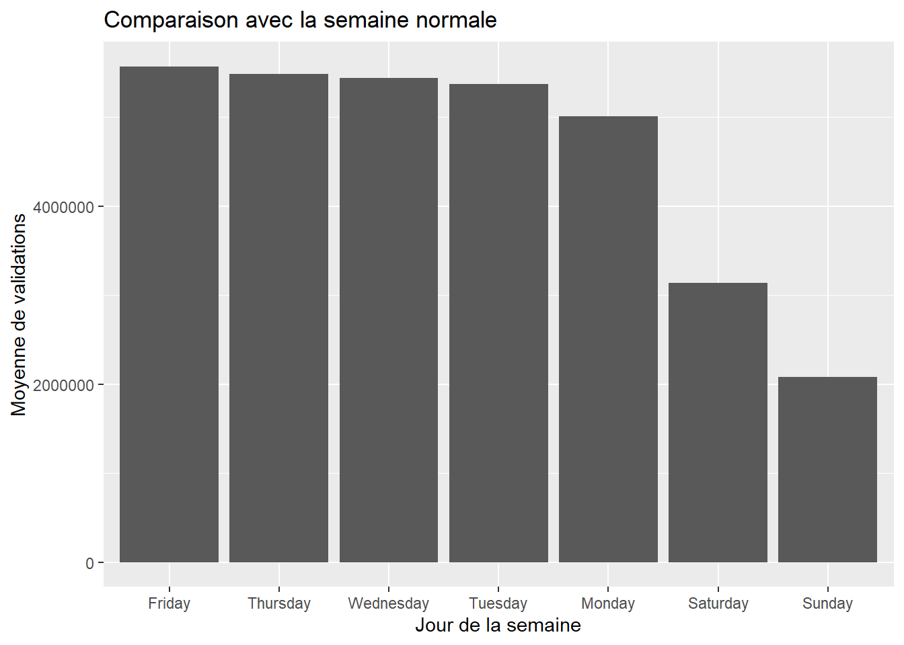
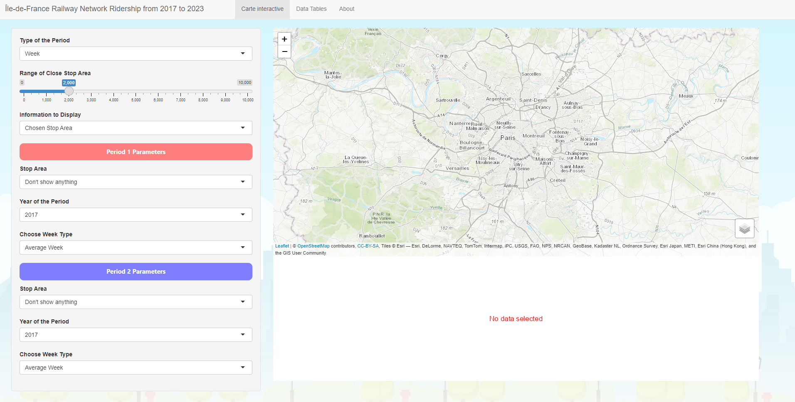
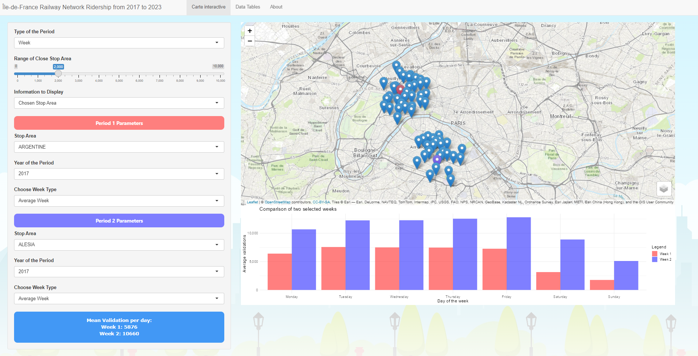
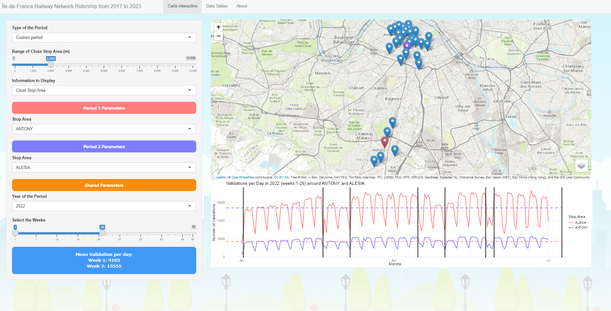
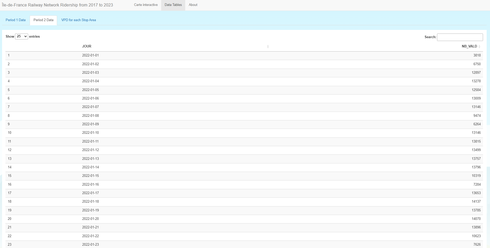

Analyzing and Visualizing Ridership Patterns in Île-de-France Rail Network
Author
Louis THIDET
Published
January 8, 2024
Introduction
This document describes the process of building a Shiny application to visualize the evolution of railway stations ridership in the Île-de-France region and brings an analysis which shows what an average ridership in a week is. It helps to discern traffic variations and distinguishing normal weeks and holiday periods. To make it, we used several datasets from the STIF Open Data portal :
NB_VALD: number of validations carried out on a given date on the network (for a given ticket)
1. Data Collection and Cleaning
First, we created a script called get_data.R, which uses the httr package to quickly download all the data needed to build the project. This script is useful because it allows us to quickly retrieve data if the site hosting it has updated it, or if it has been deleted from our computer.
Then we made a script called load_data.R. It loads the downloaded data that have been downloaded with get_data.R, then clean them and aggregate them. It produces three dataframes: stop_area_locations, vpd_combined, which is a combination of every ridership data file downloaded, and vpd_aggregated_per_day_and_stop_area, which is an aggregated version per day and stop area (“zone d’arrêt”) of vpd_combined. As load_data.R can take some time to run, at the end of the script the tables created are saved in .rds files, so that they can be loaded more quickly later.
Commentaries are provided in the scripts for more details.
2. Exploratory Data Analysis (EDA)
We can identify the overall trends and patterns in ridership of Île-de-France’s railway stations by creating a line chart that shows for each day in a year the number of validations. To do that, we won’t take the latest data available, which are the one of 2023, because the data of 2023’s second semester yet are not available. The chart that we will create will take the data of 2018. We will also use these data for the rest of the analysis. We avoid choosing years like 2020 or 2021 because the ridership probably was affected by COVID19’s pandemic.
# Loading aggregated data per days and stop areavpd_aggregated_per_day_and_stop_area <-readRDS("data/vpd_aggregated_per_day_and_stop_area.rds")# Getting aggregated data per days exclusivelyvpd_aggregated_per_day <- vpd_aggregated_per_day_and_stop_area %>%group_by(JOUR) %>%summarize(NB_VALD =sum(NB_VALD)) %>%ungroup() %>%as.data.frame()# Filtering data to 2018vpd_aggregated_per_day <- vpd_aggregated_per_day %>%filter(JOUR >=as.Date("2018-01-01") & JOUR <=as.Date("2018-12-31"))# Defining holiday periodsholiday_data <-data.frame(start_date =as.Date(c("2017-12-23", "2018-02-17", "2018-04-14", "2018-05-10","2018-07-07", "2018-10-20", "2018-12-22")),end_date =as.Date(c("2018-01-08", "2018-03-05", "2018-04-30", "2018-05-16","2018-09-02", "2018-11-05", "2019-01-07")),label =c("Christmas 2017", "Winter 2018", "Spring 2018", "Ascension 2018","Great Holidays 2018", "All Saints' Day 2018", "Christmas 2018"))# Creating plotggplot(vpd_aggregated_per_day, aes(x = JOUR, y = NB_VALD)) +geom_line(stat ="summary", fun = mean, color ='grey', linewidth =1) +# Vertical lines to display holiday periodsgeom_vline(data = holiday_data, aes(xintercept = start_date, color = label), linewidth =1) +geom_vline(data = holiday_data, aes(xintercept = end_date, color = label), linewidth =1) +# Horizontal line to display a thresholdgeom_hline(yintercept =6000000, linetype ="dashed", color ="red", linewidth =1) +# Themetheme_minimal() +scale_y_continuous(labels =function(x) format(x, scientific =FALSE, trim =TRUE)) +# Titleslabs(title ="Number of Validations in 2017",x ="Months",y ="Number of Validations" ) +guides(color =guide_legend(title ="Holidays"))

In our chart, we have highlighted every holiday in 2018. The first observation to do is that during the holiday periods, the railway stations are much less crowded as the rest of the year. We can easily notice too that the ridership increases again at the end of holiday periods. This is especially true for the Great Holidays of Summer. The second observation is that each week there is a fall in the number of validations. It happens in the weekend, and particularly on Sunday.
We can also check how are the trends in a particular stop area. For example, Saint-Lazare.
# Filter data for the specified date rangefiltered_data <- vpd_aggregated_per_day_and_stop_area %>%filter(JOUR >=as.Date("2018-01-01") & JOUR <=as.Date("2018-12-31")) %>%filter(ID_REFA_LDA =="71370")# Creating plotggplot(filtered_data, aes(x = JOUR, y = NB_VALD)) +geom_line(stat ="summary", fun = mean, color ='grey', linewidth =1) +# Vertical lines to display holiday periodsgeom_vline(data = holiday_data, aes(xintercept = start_date, color = label), linewidth =1) +geom_vline(data = holiday_data, aes(xintercept = end_date, color = label), linewidth =1) +# Horizontal line to display a thresholdgeom_hline(yintercept =35000, linetype ="dashed", color ="red", linewidth =1) +# Themetheme_minimal() +scale_y_continuous(labels =function(x) format(x, scientific =FALSE, trim =TRUE)) +# Titleslabs(title ="Number of Validations in 2017",x ="Months",y ="Number of Validations" ) +guides(color =guide_legend(title ="Holidays"))

The difference between holiday and non-holiday periods is getting very blurry there, thought we still see that validation per day falls on weekends. Saint-Lazare is one of the biggest stop area in both Paris and Île-de-France, and it doesn’t represent an overall trend.
For a global approach of seasons and monthly trends, it is relevant to make a box plot.
ggplot(vpd_aggregated_per_day, aes(x =as.factor(month(JOUR)), y = NB_VALD)) +geom_boxplot() +labs(title ="Seasons and Monthly Trends", x ="Months", y ="Number of validations") +scale_y_continuous(labels =function(x) format(x, scientific =FALSE, trim =TRUE))

The box plot provides a visual summary of the distribution of validations per day for each month. The fact the mean of almost each month is very close to the upper quartile is caused by the fact the distribution of each month is stretched toward high values: there is a high amount of validations for the most of the days, and only a few days with a low amount (the weekends). We can verify it with a density plot.
# Filtering data on Marchselected_month <-3filtered_data <- vpd_aggregated_per_day %>%filter(month(JOUR) == selected_month)# Density plotggplot(filtered_data, aes(x = NB_VALD)) +geom_density(fill ="blue", color ="black", alpha =0.7) +labs(title =paste("Density Plot of Daily Validation Counts for March"),x ="Number of Validations",y ="Density") +scale_x_continuous(labels =function(x) format(x, scientific =FALSE, trim =TRUE))

The density plot above (showing March) shows that most of the days in a month have a high number of validations.
Finally, we can observe the trends not of a year or a month, but of the average week, on a barplot.
# Calculating average weekaverage_week <- vpd_aggregated_per_day %>%group_by(weekday =weekdays(JOUR)) %>%summarise(NB_VALD =mean(NB_VALD))# Ploting the average week as a bar plotggplot(average_week, aes(x =reorder(weekday, -NB_VALD), y = NB_VALD)) +geom_bar(stat ="identity") +labs(title ="Comparaison avec la semaine normale",x ="Jour de la semaine",y ="Moyenne de validations") +scale_y_continuous(labels =function(x) format(x, scientific =FALSE, trim =TRUE))

What we did here is calculating the mean number of validation for each day of the week in the year 2018.
It was already visible on the line chart, that there was way less validations on Saturday and Sunday, but we can more appreciate it more easily there. And we also find out that as the days pass in the week, there is more validations, till Friday.
3. Comparison with Norms
We have already calculated the average week when doing the bar plot.
# Reference week mean validation per dayreference_mean <-mean(average_week$NB_VALD)mean(average_week$NB_VALD)
[1] 4586093
The average number of validations per day on the defined reference week is 4586093.
We can compare it with a random week which is outside the holiday periods. 2018-12-03 to 2018-12-09 for example. We will calculate the difference between the average number of validations in the average week and this other week.
# Random week mean validation per dayanother_week <-seq(as.Date("2018-12-03"), as.Date("2018-12-09"), by ="day")# Getting the meanweek_data <- vpd_aggregated_per_day %>%filter(JOUR %in% another_week) %>%group_by(JOUR) %>%summarise(NB_VALD)mean(week_data$NB_VALD) - reference_mean # Difference with reference week
[1] 531194
The average number of validations per day on the random week is 5117287, and the difference between the average week and this random week outside of the holiday periods is 531194. This means there is a bit more validations during the Ascension week than in the average week.
Now we will compare the average week with the week of Ascension.
# Long Weekend of Ascension 2018 mean validation per dayascension2018 <-seq(as.Date("2018-05-10"), as.Date("2018-05-16"), by ="day")# Getting the meanholiday_data <- vpd_aggregated_per_day %>%filter(JOUR %in% ascension2018) %>%group_by(JOUR) %>%summarise(NB_VALD)mean(holiday_data$NB_VALD) - reference_mean # Difference with reference week
[1] -506248.7
The average number of validations per day on the Ascension week is 4079845, but the difference between the average week and this Ascension week is -506248.7. This means there is less validations during the Ascension week than in the average week. To be sure that this is meaningful, we will do the difference between the average week’s mean validation per day and the mean validation per day of all holiday period.
# Defining all holiday periodsholidays <-list(christmas2017 =seq(as.Date("2017-12-23"), as.Date("2018-01-08"), by ="day"),winter2018 =seq(as.Date("2018-02-17"), as.Date("2018-03-05"), by ="day"),spring2018 =seq(as.Date("2018-04-14"), as.Date("2018-04-30"), by ="day"),ascension2018 =seq(as.Date("2018-05-10"), as.Date("2018-05-16"), by ="day"),great_holiday2018 =seq(as.Date("2018-07-07"), as.Date("2018-09-02"), by ="day"),all_saints_day2018 =seq(as.Date("2018-10-20"), as.Date("2018-11-05"), by ="day"),christmas2018 =seq(as.Date("2018-12-22"), as.Date("2019-01-07"), by ="day"))# Getting the mean for each holiday periodaverage_diffs <-numeric(length(holidays))for (i inseq_along(holidays)) { holiday_data <- vpd_aggregated_per_day %>%filter(JOUR %in% holidays[[i]]) %>%group_by(JOUR) %>%summarise(NB_VALD) average_diffs[i] <-mean(holiday_data$NB_VALD) - reference_mean}# Mean of the meansmean(average_diffs)
[1] -747458
We have calculated the difference between the average week’s mean validation per day and the mean validation per day of each holiday, before making the mean of the results. The value obtained is -747458. This means there is 747458 more validations on an average week than during holiday periods. To confirm these results are significant, we’re gonna use a statistical test named Student’s t-test.
t.test(average_diffs)
One Sample t-test
data: average_diffs
t = -3.4146, df = 6, p-value = 0.01424
alternative hypothesis: true mean is not equal to 0
95 percent confidence interval:
-1283082.0 -211833.9
sample estimates:
mean of x
-747458
We obtained a p-value of 0.01424, which means the results are likely 95% significant.
4. Analysis Conclusion
Ridership on the Île-de-France railway stations is organized with two phases: holiday periods and non-holiday periods. There are a large number of passengers on the network every day, but this number drops sharply at weekends, to more than halve on Sundays. But the overall trends and patters don’t necessarily follow the trends and patterns of particulars stop areas, which can vary greatly.
Shiny Application
The Shiny application we’ve created can display several periods of information between the different stations contained in the data we use. There are two types of period in this application: weeks and custom periods. When using the week mode, a bar plot is displayed for each day of the week, while the custom period mode displays a line chart whose values correspond to days of a year, and on which you can display all the weeks you wish.

Application look at startup
The application offers the option of displaying either data from one stop area, or data from two stop area at once. In the latter case, two graphs are superimposed (in the case of week mode, the day bars are placed side by side, otherwise it would be difficult to read), allowing you to appreciate the difference between the information consulted. Data configured as period 1 are displayed in red, while those configured as period 2 are shown in purple. The application also displays a blue box containing the key data of the data displayed on the screen. This key data is the average validation per day between all the data displayed.
Here’s a detailed description of the week mode functionalities. For each of the two stop areas you wish to display and compare (you can also choose to display only one of them. And note that you can select the Average Stop Area, the one whose values are the average of all the existing stop areas), you choose the year of the week to be displayed, then you can display either the average week of the stop area, or the average week of the stop area’s one-year holiday period, or the average week between several selected weeks (For example, if I’ve set the year 2022, I can display the average week between weeks 10 to 23 of 2022. In this and previous cases, what the application does each time is calculating an average week between several weeks), or a particular week (such as week 10 of 2022).

The custom period mode allows you to select a year for both stop areas, as well as the period to be observed. It selects this period in weeks. The data is then displayed as a line chart. For each stop area configured, a line corresponds to the average number of validations per day over the period observed. But there are also vertical lines, showing the beginning and end of holiday periods.
But that’s not all. In fact, the application doesn’t just compare information between two stop areas. It can display information not only from the stop areas that we have chosen (Then, happens what we described earlier), but also from the stop areas around the stop areas chosen. This is why it has an input called “Range of Close Stop Area”, which configures in meters the range within which the stop areas around the selected stop areas will be considered. When the Information to Display input is set to “Close Stop Area”, not only the selected stop areas are put into the plots, but also the stop areas around them. The application averages the data from these stop areas before displaying them. This feature is the reason why the application includes a map. It shows which stop areas are located around the selected stop areas, and where the selected stop areas are located.

While the ridership is very similar between Antony and Alesia, we see the ridership is way more dense around Alesia
Finally, the application also offers secondary functionalities. Users can, if they wish, consult the data used directly from the application. It contains a Data Tables tab, which displays the validations per day for each date and stop area (Not in online version, because it makes the application out of memory), as well as the data displayed on the plots configured.
In short, with its graphs, the application makes it possible to appreciate trends and developments on a local and individual level, by consulting information from just one or two stop area, but it also makes it possible to appreciate them in a more global way, via the possibility of obtaining data on an area around a given stop area and the display of data from the Average Stop Area.

Checking the data
Note: If one week is displayed but the other is not, this means that the week not displayed has no data available for the selected parameters.
Limits
We had the idea of allowing the user to display a smooth map, since it would have been probably good to show the data in an overall way. But we left this idea, because of our lack of time.
The applications takes several seconds to start (like 10 seconds) because of the loading of the stop areas into the stop area selection inputs.
The validation per day data sometimes have the same station wrote with wrong name. It makes unnecessary duplicates in the inputs to choose the stop areas and we didn’t find a good way to get rid of them without removing true values, except the manual way.